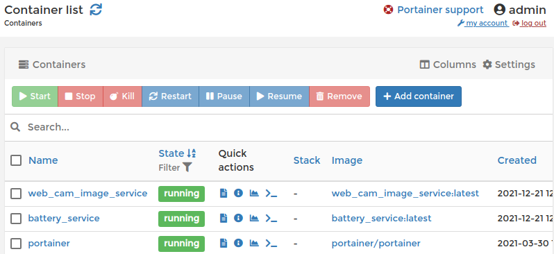

<< Previous Page | Next Page >>
Part 4: Deploying to the Spot CORE¶
In this part of the tutorial, you will:
Build docker images for the image service and data plugin.
Run and test the docker images.
Deploy the docker images to the robot’s payload.
The instructions included use the Spot CORE payload, but docker images can be deployed to many different kinds of payload computers.
Packaging the services for deployment¶
The previous sections described how to test the image service or the data acquisition plugin on your laptop. The next step is to package the services for deployment. The suggested approach is to package everything as Docker containers and run them on a SpotCORE payload attached to the robot.
Creating Docker images¶
A variety of Spot SDK examples include a Dockerfile file with instructions to package the example as a docker image. An example Dockerfile for the web_cam_image_service example is shown below.
The file contains instructions to start from the python:3.7-slim image with an additional command to install a few necessary system packages.
FROM python:3.7-slim
# Requirements for opencv to work.
RUN apt-get update && apt-get install -y libsm6 libglib2.0-0 libxrender1 libxext6
It then uses the docker-requirements.txt file to install all the wheels necessary to run the example. We recommend keeping a separate requirements.txt file that specifies the range of dependencies that you require, and then use pip freeze to lock those dependencies into a docker-requirements.txt file so that the docker builds are repeatable with known versions.
COPY docker-requirements.txt .
RUN python3 -m pip install -r docker-requirements.txt
Finally, it copies the rest of the files into the image and sets web_cam_image_service.py as the entrypoint when starting docker containers from this image. We also provide some default arguments designed for running on the Spot CORE. These can be overridden for local testing, but make deployment to a payload computer.
COPY . /app
WORKDIR /app
ENTRYPOINT ["python3", "/app/web_cam_image_service.py"]
# Default arguments for running on the Spot CORE
CMD [ "192.168.50.3", "--host-ip=192.168.50.5", "--payload-credentials-file=/creds/payload_guid_and_secret"]
To build the docker image, run the commands:
docker build --tag web_cam_image_service .
docker save web_cam_image_service > web_cam_image_service.tar
This will build the image and create a file to upload to the robot.
The above commands assume that your user is in the docker group. If not, you may need to run them with sudo.
An example docker_requirements.txt for the web cam image service and a point cloud data acquisition plugin can be found in the examples directory. The main difference is the OpenCV dependency in image services.
Testing Docker container locally¶
Now that we have a docker image, the next step is to test the docker image locally on your laptop. The Spot SDK documentation contains instructions how to do that here.
Specifically, to test the image service and the data acquisition plugin docker images, you would run the following, if connected to the robot’s wifi:
export DEVICE_PATH=/dev/video0
export WEBCAM_PORT=5000
export BATTERY_PORT=5050
docker run --device=$DEVICE_PATH --network=host web_cam_image_service $ROBOT_IP --payload-credentials-file $CRED_FILE --host-ip $SELF_IP --port $WEBCAM_PORT --device-name $DEVICE_PATH
docker run --network=host battery_service $ROBOT_IP --payload-credentials-file $CRED_FILE --host-ip $SELF_IP --port $BATTERY_PORT
You will need to ensure that $WEBCAM_PORT and $BATTERY_PORT are accessible on your computer and not blocked by any firewall or networking rules.
Testing Docker container on a Compute Payload¶
Once you have tested and verified that the docker containers work correctly on your laptop, it is time to install them on the computation payloads on the robot, such as SpotCORE. The Spot SDK documentation contains instructions how to do that here.
Configure image service docker container¶
After importing the web_cam_image_service.tar docker image file in Portainer as described in the section above, we will configure a docker container.
In the main configuration page, enter the name of the container and the image to use.

In the Volumes tab, set up a read-only bind mount from /opt/payload_credentials on the host to /creds in the container:

Then,
In the Network tab, change type to “host”.
In the Restart Policy tab, change policy to “Unless stopped”,
In the Runtime & Resources tab, add a device mapping for the USB web cam, as shown in the screenshot below:

At the end, click the “Deploy the container” button.
Configure battery service docker container¶
After importing the battery_service.tar docker image file in Portainer, we will configure a docker container.
Same as with the image service container, in the main configuration page enter the name of the container and the image to use.

In the Volumes tab, set up a read-only bind mount from /opt/payload_credentials on the host to /creds in the container:
Then,
In the Network tab, change type to “host”.
In the Restart Policy tab, change policy to “Unless stopped”,
At the end, click the “Deploy the container” button.
Confirming deployment¶
After deploying the two containers, the “Containers” Portainer page will show them both as “running”: 
Click on the logs icon to verify that they are running correctly or to debug any errors that occur. Common problems at this stage are often typos in the volume configuration or command arguments.

Now that the containers are deployed to the robot, use the tester programs again to verify that they are operating and responding correctly.
# In examples/tester_programs
$ python3 image_service_tester.py $ROBOT_IP --service-name web-cam-service --check-data-acquisition
$ python3 plugin_tester.py $ROBOT_IP --service-name data-acquisition-battery